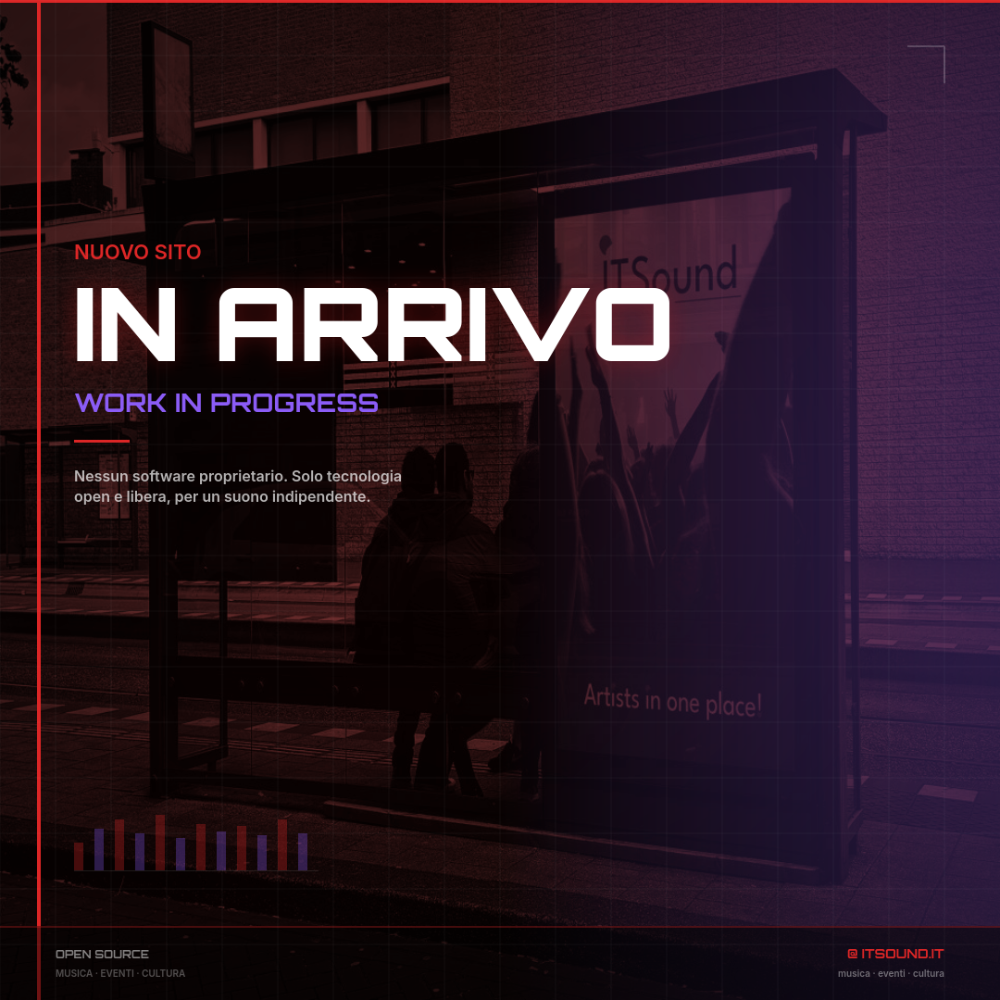
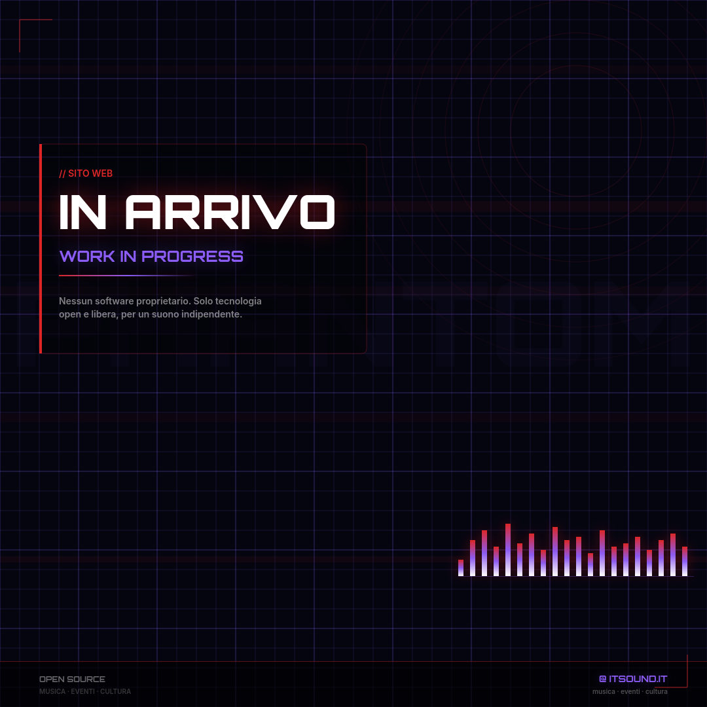
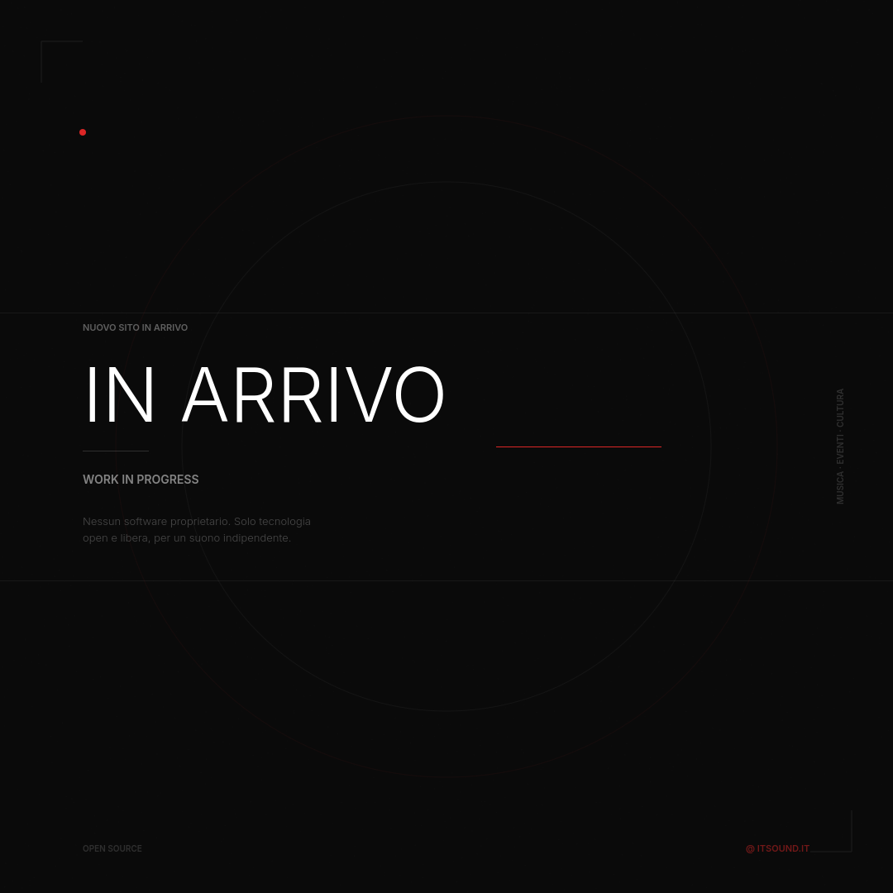
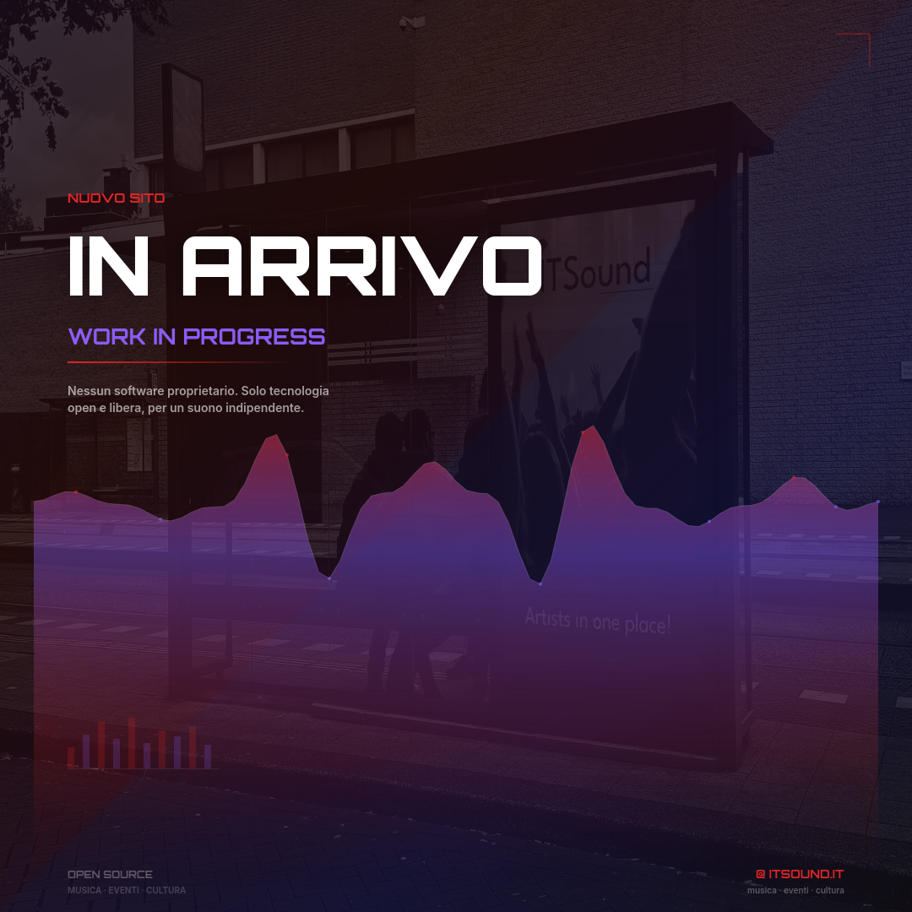

Magazine-style layout con foto in duotone rosso/nero. Griglia editoriale, barre frequenza decorative, layout asimmetrico. Ispirato a Resident Advisor e Pitchfork.

Griglia neon, anelli tecnologici, gradienti di frequenza con glow. Aesthetic cyber/tech con pannello vetro scuro. Ispirato a Warp Records e Monstercat.

Massimo negativo, tipografia essenziale, texture sottile. Palette quasi monocromatica. Ispirato a Kompakt, Innervisions e design minimal tedesco.

Waveform audio a piena larghezza con gradienti dinamici. Foto in background sottile, diagonali di colore, punti luminosi sui picchi. Ispirato a Spotify Canvas e label promo.